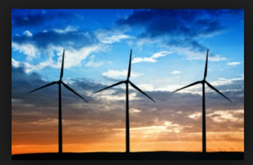
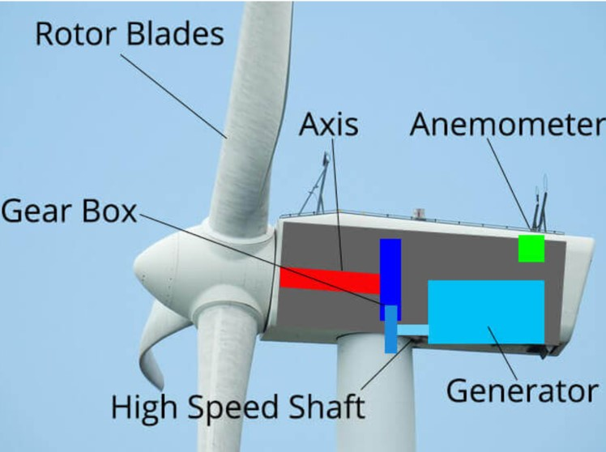
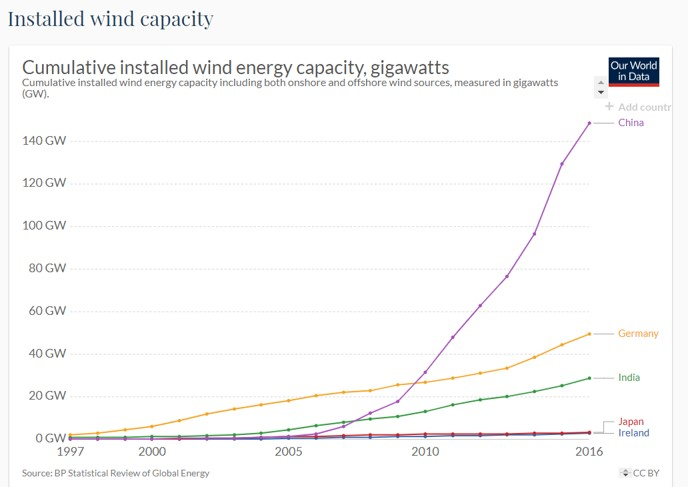

Introduction
Wind is the movement of air from an area of high pressure to an area of low pressure. In fact, wind exists because the sun unevenly heats the surface of the Earth. As hot air rises, cooler air moves in to fill the void. As long as the sun shines, the wind will blow. And wind has long served as a power source to humans. Ancient mariners used sails to capture the wind. Farmers once used windmills to grind their grains and pump water. Today, more and more wind turbines wring electricity from the breeze. Over the past decade, wind turbine use has increased more than 25 percent per year. Still, it only provides a small fraction of the world's energy.
Turbines
-

- Wind blows in the direction of the wind turbines rotor blades
- The shape of the rotor blades causes them to rotate when wind is blowing on them, as they rotate they cause the central axel at the centre of the blades to turn.
- Within the main body of the turbine (Called the Nacelle), there is a gearbox that converts the low speed rotation of the axel into higher speed rotations to drive the generator./li>
- The generator which is located behind the gearbox converts the kinetic energy into electric energy
- Wind vanes and Anemometers attached to the wind turbine take measurements of wind speed and direction, this information is then used to turn the wind turbine into the direction of the wind to maximise efficiency. If there is too much wind or turbulent wind these measurements will also to used to indicate when the brakes need to be applied to stop the rotors from turning
- The electricity produced by the generator in the wind turbine is sent by a cable down through the tower of the turbine to a transformer.
- The transformer converts the electricity to a higher voltage so that it can be used by the nearby buildings it is powering, if the wind power generated for the power grid it is sent to a substation first where it will be converted into a higher voltage
Trends
Drawbacks include  complaints from locals that wind turbines are ugly and noisy. The slowly rotating blades can also kill birds and bats, but not nearly as many as cars, power lines, and high-rise buildings do. The wind is also variable: If it's not blowing, there's no electricity generated. Nevertheless, the wind energy industry is booming. Thanks to global efforts to combat climate change, such as the Paris Agreement, renewable energy is seeing a boom in growth, with wind energy leading the way. From 2000 to 2015, cumulative wind capacity around the world increased from 17,000 megawatts to more than 430,000 megawatts. In 2015, China also surpassed the EU in the number of installed wind turbines and continues to lead installation efforts. Industry experts predict that if this pace of growth continues, by 2050 one third of the world's electricity needs will be fulfilled by wind power